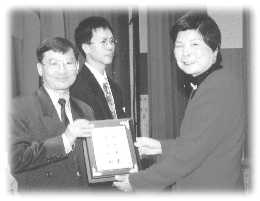
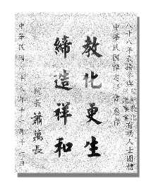
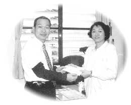
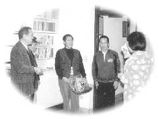

| Un phare dans l'obscurité |
|  | L'Association Internationale du Maître Suprême Ching Hai est reconnue par le Ministère de la Justice pour son travail de conseil en prison. |
|  |
[Taipei] L'Association Internationale du Maître Suprême Ching Hai était parmi les groupes qui ont été reconnus récemment pour leurs "contributions méritoires en conseils en prison et la protection des jeunes délinquants en liberté surveillée en 1999". Les représentants ont accepté un certificat de reconnaissance présenté par le Ministère de la Justice Yeh Chin-fong à la cérémonie de recommandation tenue au Ministère de la Justice le 27 décembre.
Depuis 1990, dans tout Formose et ses îles avoisinantes, des volontaires des centres de Formose ont participé aux conseils donnés en prison, en partageant les enseignements de Maître dans les centres de détentions et les prisons. Ces dernières années des amis pratiquants ont mené des conseils pour prisonniers avec le bureau du procureur du tribunal du district Hualien et l'Association de la sauvegarde de la nouvelle vie de Formose de la direction de Hualien. Aussi, de nombreux jeunes délinquants en liberté surveillée ont été aidés pendant des moments difficiles par des aides et des remboursements médicaux. La dernière participation et les services de compréhensions ont gagné cette recommandation pour la deuxième fois.
La cérémonie annuelle de recommandation a été organisée par le Ministère de la Justice pour encourager les organisations sociales qui se dévouent aux conseils en prison et au travail de protection des jeunes en liberté surveillée et aident les prisonniers libérés à vivre des vies nouvelles et indépendantes. Un comité du Ministère de la Justice a analysé avec attention les nombreux groupes nominés pour cette troisième recommandation annuelle avant de sélectionner les dix gagnants. Parmi ceux qui ont été honorés, il y avait l'Association Internationale du Maître Suprême Ching Hai, la soeur chrétienne Zhou Zichun, l'Association du conté de Taipei pour ses fonctionnaires bénévoles en liberté surveillée, et la maison chrétienne du centre de conseils d'amour du Seigneur.
|  | Les amis pratiquants de Formose répondent à la demande de l'Association de la sauvegarde de la nouvelle vie de Formose de la direction de Hualien pour l'urgence des fonds de secours avec un chèque de 10000 $NT. A gauche, le chef du bureau recevant la contribution de la part du bureau du procureur du tribunal du district Hualien. En décembre 1999 et janvier 2000, les pratiquants distribuent des vêtements chauds et des affaires aux prisonniers de la maison de conseils de l'association de protection de Geng Sheng de la direction de Hualien et des revenus aux libérés sur paroles sous le contrôle du département de Ministère public de Hualien. 
| |